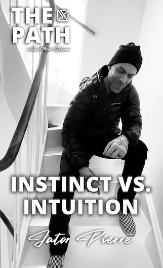

B859 · Instinct Vs. Intuition
Hi {first_name},
Jator Pierre is a thought-provoking gem in the wellness space. He is a mental-emotional expert, avid athlete, and dear friend. In this episode, we break down the dynamics of creating and nurturing relationships and use our friendship as a real-world example. The triggers, projection, pedestalling, expectation, we cover it all!
In Episode #11 of The Path Podcast, Jator and I discuss:
 Click here to listen on Spotify. Click here to listen on Apple.
If you are enjoying the show please subscribe and leave a review. Your support is much appreciated.
Thank you!
Yours in health and strength, Mike |